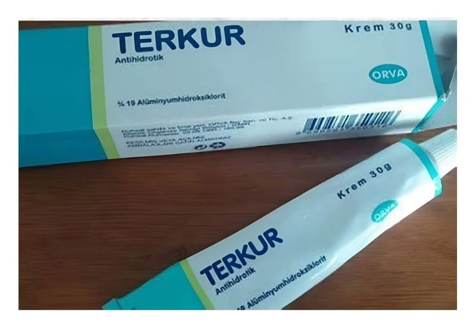

Terkur %19 Krem (30 g)

Ne için kullanılır
KT · Bölüm 1TERKUR, haricen kullanıma yönelik bir kremdir. Antiseptik ve Dezenfektanlar - Alüminyum ajanları olarak adlandırılan bir ilaç grubuna dahildir. Etkin madde olarak, 1 gramında 190 mg alüminyum hidroksiklorit içermektedir. Alüminyum hidroksiklorit, terlemeyi önleyici, bakterilere ve mantarlara karşı etkili bir bileşiktir. TERKUR, hafif parfüm kokulu, beyaz renkli, bağdaşık (homojen) özelliklerde olup, 30 g krem içeren alüminyum tüplerde bulunmaktadır. TERKUR, her türlü aşırı terlemenin (hiperhidrozis) tedavisinde; özellikle koltuk altı, ayak ve ellerde görülen aşırı terleme ve buna bağlı gelişen koku yayılmasına karşı; ayrıca vücudun kıvrımlı yerlerinde oluşan yüzeysel iltihapların (intertrigo) ve yürüyüşe bağlı olarak ayaklarda oluşabilen içi sıvı dolu kabarcıkların önlenmesinde kullanılır.